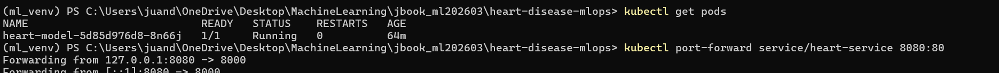

Etapa 4 · Despliegue en Kubernetes local#
Kubernetes [Burns et al., 2016] administra el ciclo de vida del contenedor: lo reinicia si falla, mantiene el número de réplicas pedido y lo expone con un servicio de red. El despliegue se hace en un clúster local con Minikube.
Archivos de esta etapa en GitHub: k8s/deployment.yaml y k8s/service.yaml.
Manifiestos#
apiVersion: apps/v1
kind: Deployment
metadata:
name: heart-model
spec:
replicas: 1
selector:
matchLabels:
app: heart-model
template:
metadata:
labels:
app: heart-model
spec:
containers:
- name: model
image: heart-api
imagePullPolicy: Never
ports:
- containerPort: 8000
El manifiesto sigue el del enunciado con un cambio: en lugar de <TU_USUARIO_DOCKER>/heart-api (una imagen de Docker Hub) usa la imagen local heart-api, con imagePullPolicy: Never para que Kubernetes no intente descargarla. Por eso la imagen se carga antes en Minikube con minikube image load.
apiVersion: v1
kind: Service
metadata:
name: heart-service
spec:
selector:
app: heart-model
ports:
- protocol: TCP
port: 80
targetPort: 8000
type: LoadBalancer
El servicio recibe tráfico en el puerto 80 y lo envía al puerto 8000 del contenedor.
Despliegue#
minikube start --memory=2048 --cpus=2
minikube image load heart-api
kubectl apply -f k8s/deployment.yaml
kubectl apply -f k8s/service.yaml
kubectl get pods
kubectl get svc
Estado obtenido en el clúster local:
$ kubectl apply -f k8s/deployment.yaml
deployment.apps/heart-model unchanged
$ kubectl apply -f k8s/service.yaml
service/heart-service unchanged
$ kubectl get pods
NAME READY STATUS RESTARTS AGE
heart-model-5d85d976d8-8n66j 1/1 Running 0 12m
$ kubectl get svc
NAME TYPE CLUSTER-IP EXTERNAL-IP PORT(S) AGE
heart-service LoadBalancer 10.96.224.153 <pending> 80:30969/TCP 11m
kubernetes ClusterIP 10.96.0.1 <none> 443/TCP 12m


Figura 3 Terminal con el pod heart-model en Running (1/1, 0 reinicios) y el reenvío de puerto hacia el servicio activo (8080 -> 8000).#
El pod heart-model queda en Running (1/1) y el servicio heart-service expone el puerto 80 hacia el 8000 del contenedor. Que EXTERNAL-IP aparezca como <pending> es normal en Minikube, que no tiene un balanceador de carga externo.
Si el pod aparece en ErrImageNeverPull
Con imagePullPolicy: Never, Kubernetes solo usa imágenes que ya estén dentro de Minikube. Si el pod muestra ErrImageNeverPull, la imagen todavía no se cargó: se resuelve ejecutando minikube image load heart-api y esperando a que el pod pase a Running.